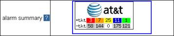
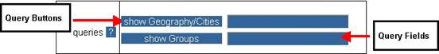

AT&T customers who have been authorized access to Visualizer will access it through the AT&T BusinessDirect® tool. After successfully logging into AT&T BusinessDirect®, the following screen will appear. Choose the “Tools” tab and click[1] on the “Hosting Element Visualizer” link, which is under “Reporting Tools” group, to access Visualizer.
Figure 2.1 – BusinessDirect® Customer Access Screen
The landing page will display after clicking on the “Hosting Element Visualizer” link. The content of the landing page varies based on account settings. The following screen is an example of the landing page.

Figure 2.2 – BusinessDirect® Landing Page
Following is a brief description of some of the options on the Visualizer landing page. Any element with a (deep blue) background color is interactive.
Menu Bar - displayed on every page.
? – opens a help window with details of the function.
For BusinessDirect® users, alarm summary will be shown on their landing page. The customer icons displayed on the landing page vary based on account settings.

Figure 2.3 – Alarm Summary
The alarm summary icon is shown in a table to provide an easy understanding of the customer’s current open alarms status. The alarm summary categories can be set in Preference. Here we introduce an example depicting the default setting. In the first row, ‘+tkt’, indicates ticketed alarms for different alarm levels; in the second row, ‘-tkt’, indicates unticketed alarms, which are those alarms that have not been assigned as ticketed alarms. Please note, the total alarm number is the sum of ticketed alarms and unticketed alarms. For example, in Figure 2.3, there are 61 critical alarms (in red color) generated for AT&T. Three (3) alarms were assigned as ticketed, but 58 were not assigned as tickets.
The specific alarm colors are discussed in Alarm Colors.
Quick links – provide a list of views with pre-set parameters, established by AT&T, which can be accessed by the user (this is a variable based on the account settings).
Queries – drill directly into Visualizer in increasing levels of detail. Available information is based on the system access privileges assigned to each user.
Note:
Detailed information on queries is discussed in Using Visualizer Queries.
As shown in following figure, the middle column contains a list of query run buttons. Specific query request information can be entered in the adjacent text fields contained in the adjacent right column. These query searches are alpha based. Enter an entire name, part of the name, or even a single letter for a search. For example, entering AT&T Corp, AT&T, or A in the customer query field, will return the AT&T Corp node. Enter a multiple query search using the “|” character to separate each query, as in AT&T|Customer Name.
As your mouse hovers over each field, a pop up message will display specific help information.

Figure 2.4 – Queries Button Segment
A brief description of each query type is provided below.
· show Geography/Cities – Click on this button or click/press Enter within the adjacent text field to run this query and all geographic cities will display by default. Optionally, type the name of a specific geographic city (e.g., Secaucus) in this field and click/press Enter or click on the show Geography/Cities button to show matching cities.
· show Groups – Click on this button or click/press Enter within the adjacent text field to run this query and all groups will display by default. Optionally, type the name of a specific group (e.g., Financial) in this field and click/press Enter or click on the show Groups button to show matching groups.
News - displays the latest information on Visualizer, which may include current status, current or upcoming changes to the system.
Note: Review Navigating the Visualizer Site before using the queries or admin links.